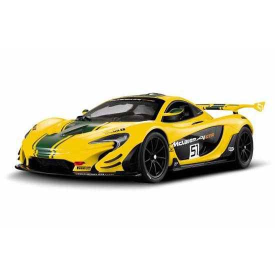

MCLAREN P1

El McLaren P1 es un automóvil superdeportivo híbrido de edición limitada por el fabricante automotriz británico McLaren Automotive. El coche de concepto debutó en el Salón de París de 2012,1 y es el tan esperado sucesor del McLaren F1, utiliza energía híbrida y tecnología de la Fórmula 1.
El estilo del P1 está influenciado por el McLaren MP4-12C, pero con paneles de la carrocería agregados para hacer que el coche parezca agresivo. No tiene la misma configuración de tres asientos como su predecesor, el McLaren F1. El diseño de los faros recuerda al logotipo de McLaren.